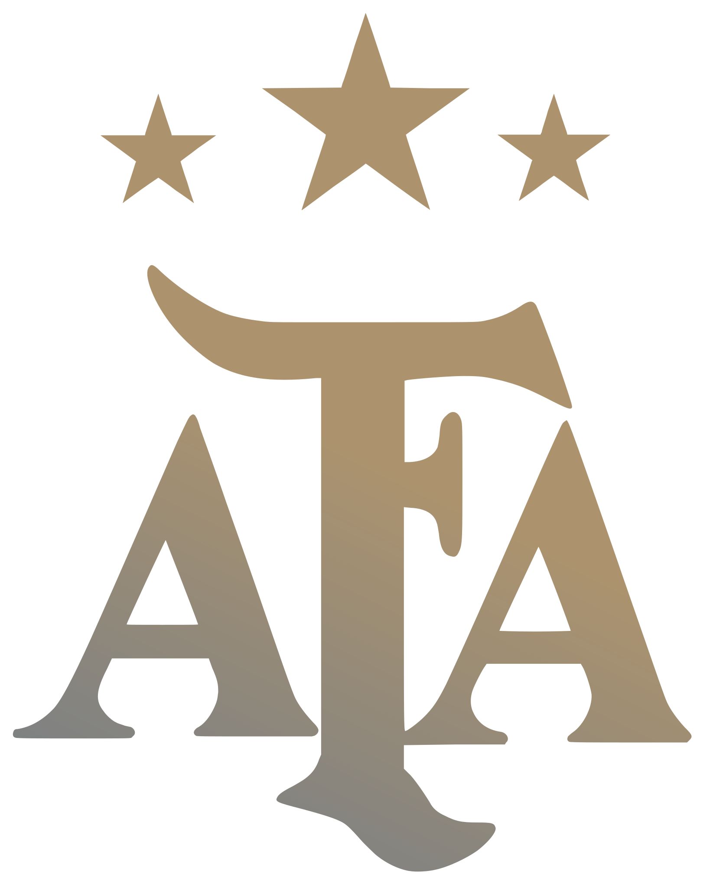
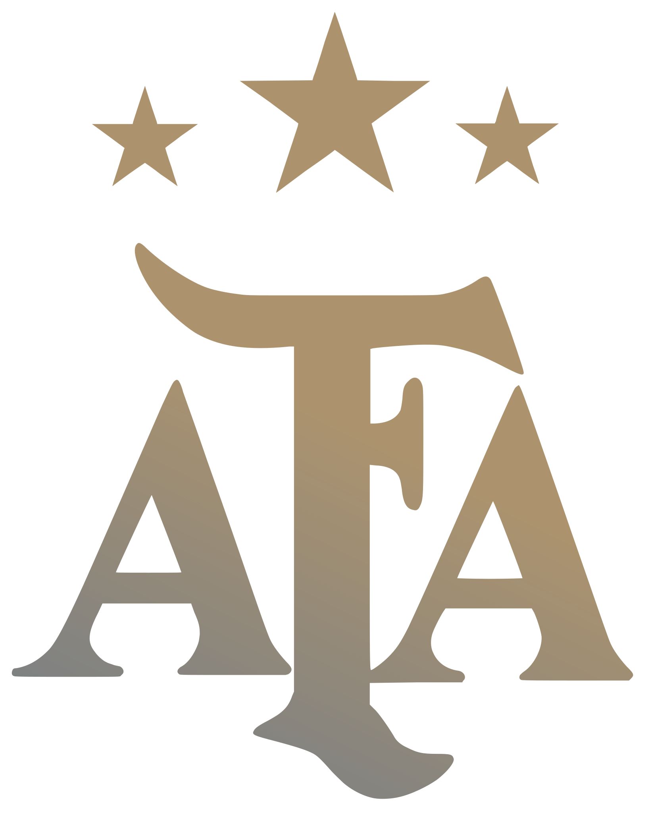

Titulos totales de la seleccion Argentina
- *Copa mundial de futbol
- *Copa america
- *Copa de Campeones Conmebol-UEFA
- *Copa FIFA Confederaciones
- *Torneo olimpico de futbol
-
El fútbol o balompié es uno de los deportes disputados en los Juegos Olímpicos de Verano; el torneo se rige bajo las normas de la FIFA, que lo denomina oficialmente Torneo Olímpico de Fútbol, y lo organiza en conjunto con el COI. Es el torneo de selecciones no absolutas más antiguo del mundo. Estados Unidos es el comité olímpico más exitoso con 4 medallas de oro y Brasil el que más medallas ha conseguido en la historia del torneo con un total de 9 medallas (2 de oro, 5 de plata y 2 de bronce). La categoría masculina se ha disputado desde París 1900, a excepción de la edición de Los Ángeles 1932, y que el torneo de fútbol femenino aparece se disputa desde Atlanta 1996. De la misma forma que el resto de los torneos de la FIFA, cuenta con una competencia preliminar de clasificación que distribuye las plazas disponibles entre las distintas confederaciones regionales. El balón oficial lo fabrica la compañía alemana de equipamiento deportivo Adidas.

La Copa Mundial de la FIFA, también conocida como Copa Mundial de Fútbol, Copa del Mundo o simplemente Mundial, y cuyo nombre original fue Campeonato Mundial de Fútbol, es el principal torneo internacional oficial de fútbol masculino a nivel de selecciones nacionales en el mundo. Este evento deportivo se realiza cada cuatro años desde 1930, con la excepción de 1942 y 1946, en los que se suspendió debido al desarrollo y las consecuencias de la Segunda Guerra Mundial, respectivamente. Cuenta con dos etapas principales: un proceso clasificatorio en el que participan más de 200 selecciones nacionales y una fase final realizada cada cuatro años en una sede definida con anticipación en la que participarán 48 equipos a partir de la edición de 2026; durante un periodo cercano a un mes. Ha sido realizada en 22 ocasiones, en las que ocho países considerados históricamente potencias mundiales y candidatos— han alzado la copa: Brasil es la selección más exitosa, con cinco victorias; Alemania e Italia le siguen con cuatro trofeos; Argentina con tres; Uruguay y Francia la han ganado dos veces, en tanto Inglaterra y España se han titulado campeones una vez.Los equipos europeos han ganado el título en doce ocasiones, mientras que los sudamericanos lo han hecho en diez. Solo tres equipos de otras confederaciones han llegado a semifinales: Estados Unidos en 1930, Corea del Sur en 2002 y Marruecos en 2022.

La Copa América es el principal torneo internacional oficial de fútbol masculino en América del Sur. Es organizada por la Confederación Sudamericana de Fútbol (Conmebol) y sus resultados han sido oficialmente reconocidos por la FIFA. Ha sido conquistada por ocho de las diez selecciones de la Conmebol: Uruguay y Argentina, los máximos vencedores del torneo, tienen quince títulos cada uno; Brasil, nueve; Perú, Paraguay y Chile, dos; y Bolivia y Colombia, uno El título nunca ha sido obtenido por una selección no sudamericana.

La Copa de Campeones Conmebol-UEFA, anteriormente llamada Copa Artemio Franchi o —de forma oficial— Campeonato Intercontinental de Selecciones, y también conocida como Finalissima («Finalísima» en italiano), es una copa internacional de carácter oficial amparada por la FIFA. Creada en 1985, se han disputado tres ediciones oficiales. También se han jugado otros tres partidos aunque de carácter amistoso pero con el mismo formato. Tal como ocurría con la Copa Intercontinental de Clubes, esta copa es organizada por la Confederación Sudamericana de Fútbol (Conmebol) y la Unión de Asociaciones de Fútbol Europeas (UEFA), y se disputa entre las selecciones campeonas de la Copa América y la Eurocopa. Es considerada, junto con la Copa de Naciones Afro-Asiáticas, como una de las precursoras de la hoy desaparecida Copa Confederaciones (Copa Rey Fahd). Su nombre original fue adoptado en memoria del dirigente deportivo italiano Artemio Franchi.

La Copa FIFA Confederaciones, también llamada simplemente Copa Confederaciones, fue un torneo internacional de fútbol de carácter oficial organizado por la FIFA. En él participaban las seis selecciones campeonas de las confederaciones continentales que componen el máximo organismo del fútbol mundial, además del vigente campeón del mundo y el país anfitrión para un total de ocho contendientes. Era el segundo torneo más importante a nivel de selecciones organizado por la FIFA después de la Copa Mundial. Desde el año 2005 se disputó cada cuatro años; inicialmente las primeras ediciones de 1992 y 1995 se disputaron con un intervalo de tres años, y de 1995 hasta 2005 se celebraba cada dos años. Desde 2001 (con excepción de 2003), se disputaba un año antes de la Copa Mundial en el país anfitrión. La Copa Confederaciones fue realizada en diez ocasiones, en las que seis países alzaron la copa: Brasil fue el equipo más exitoso, con cuatro títulos; Francia le siguió con dos trofeos; en tanto Argentina, México, Dinamarca y Alemania se han titulado campeones en una ocasión. El torneo presentó un fuerte dominio de las selecciones sudamericanas y europeas: las primeras ganaron el título en cinco ocasiones, mientras que las europeas lo ganaron en cuatro oportunidades. Los máximos goleadores históricos del torneo son Ronaldinho y Cuauhtémoc Blanco; ambos con 9 goles.